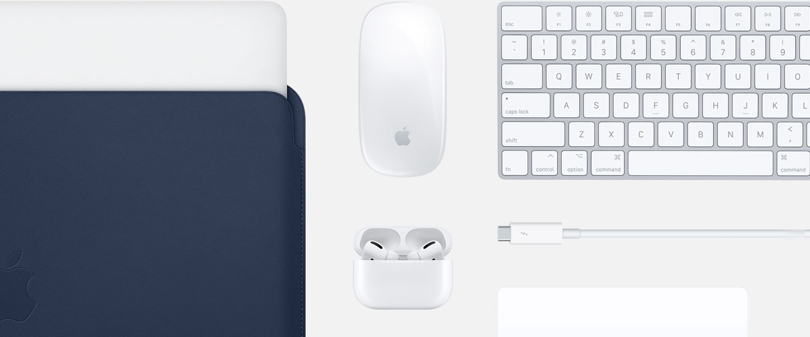
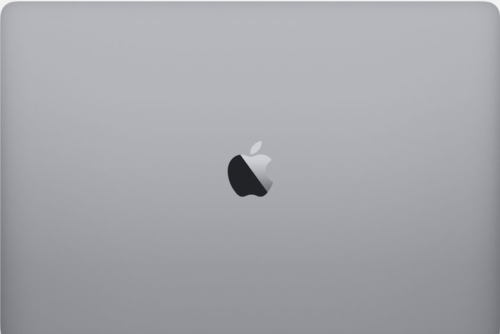

MacBook Air
MacBook Air
 MacBook Pro 13"
MacBook Pro 13"
 MacBook Pro 16"
MacBook Pro 16"
 iMac Pro
iMac Pro
 Mac Pro
Mac Pro
 Mac mini
Mac mini
 Sammenlign
Sammenlign
 Pro Display XDR
Pro Display XDR
 Tilbehør
Tilbehør
 Catalina
Catalina
Fra Pro til Pro.
Vores mest powerfulde udvalg af professionelle produkter – MacBook Pro, Mac Pro og Pro Display XDR. Klar til det bedste, du nogensinde har lavet.
Gør julen lidt gladere.
Shop gaver >Se tilbehør til MacBook Pro.
Forvandl den Mac, du har, til den, du drømmer om.
Aflevér din gamle computer – er den i god nok stand, får du tilskud til en ny. Og hvis ikke, hjælper vi dig med at få den genbrugt, gratis. Det er godt for både dig og miljøet.
Få din bytteværdi > Find en forhandler.
Apple har hundredvis af autoriserede forhandlere.
Der er sikkert en i nærheden
Læs mere >Hvad gør en Mac til en Mac?
Macpower.
Og lidt til.
Særlige apps til musik, TV og podcasts. Smarte nye funktioner som Sidecar, effektiv teknologi til udviklere og dine yndlingsapps på iPad nu på Mac.
macOS
macOS er det styresystem, der er hjernen i enhver Mac. Det giver dig mulighed for at gøre ting, som ganske enkelt ikke er mulige på andre computere. Forklaringen er, at styresystemet er udviklet specifikt til den hardware, det kører på – og vice versa.
Læs mere >iCloud
iCloud opbevarer din musik, dine billeder, videoer, dokumenter, beskeder, programmer og andet på sikker vis – og opdaterer dem på tværs af alle dine enheder. På den måde har du altid adgang til alle dine ting, overalt.
Læs mere >Indbyggede apps.
Sammen med Mac får du en række programmer, der øger kreativiteten og produktiviteten, hjælper dig med at opdage nyt, holde kontakten og arbejde mere effektivt.
Hold dit evigt voksende bibliotek organiseret og lettilgængeligt. Gør dine billeder endnu bedre, og lav dem om til smukke gaver. Og brug iCloud-fotos til at gemme et helt livs billeder og videoer i skyen.
Fortæl historier som aldrig før. Et enkelt design og intuitive redigeringsfunktioner gør det nemt at lave flotte 4K-film og trailere i ægte Hollywood-stil. Og med iMovie Theater kan du se dem på alle dine enheder. Læs mere om iMovie >
Den nemmeste vej til at lave sange, der lyder fantastisk, på din Mac. Med den intuitive grænseflade og adgang til et komplet lydbibliotek har det aldrig været nemmere at lære, spille, optage og dele musik – som en professionel. Læs mere om GarageBand >
Det effektive tekstbehandlingsprogram giver dig alt, hvad du skal bruge for at lave dokumenter, der er smukke at se på. Og at læse i. Du kan arbejde på både Mac-, iOS- og iPadOS-enheder – og fint arbejde sammen med dem, der bruger Microsoft Word. Læs mere om Pages >
Lav detaljerede regneark med dramatiske, interaktive diagrammer, tabeller og billeder, der præsenterer dine data på smukkeste vis. Du kan arbejde på både Mac-, iOS- og iPadOS-enheder – og fint arbejde sammen med dem, der bruger Microsoft Excel. Læs mere om Numbers >
Smukke præsentationer, der puster liv i alle dine idéer. Brug de stærke redskaber og de flotte effekter til at fange dit publikums opmærksomhed. Du kan arbejde på både Mac-, iOS- og iPadOS-enheder – og fint arbejde sammen med dem, der bruger Microsoft PowerPoint. Læs mere om Keynote >
Safari har innovative funktioner, som gør det til en endnu større fornøjelse at være på nettet. På flere måder. De indbyggede anonymitetsfunktioner hjælper med at beskytte dine oplysninger og din Mac. Den opdaterede startside hjælper dig med at gemme, finde og dele dine yndlingssider – hurtigt og nemt. Og i Siri-forslag kan du se bogmærker, links fra din læseliste, iCloud-faner, links, du modtager i Beskeder, og meget mere.
Professionelle programmer
Brancheførende programmer, der giver maksimal kontrol over redigering, behandling og output til musik og film. Til professionelle, der vil have mest muligt ud af deres kreative indsats.
Med Logic Pro har du et komplet optagelses- og MIDI-produktionsstudie på din Mac med alt det, du behøver for at komponere, optage, redigere og mixe som aldrig før. Og med en stor samling funktionsrige plug-ins og tusindvis af lyde og loops har du alt, hvad du skal bruge for at gå fra inspiration til færdigmixet version – uanset hvilken slags musik du vil lave. Læs mere om Logic Pro X >
Tag din Mac med på scenen sammen med en fuldskærmsbrugerflade optimeret til liveoptræden, fleksibel hardwarekontrol og en stor samling tilbehør og lyde, der er kompatible med Logic Pro X. Læs mere om MainStage 3 >
Final Cut Pro er udviklet til kreative filmfolk og har revolutionerende videoredigeringsfunktioner, effektiv organisering af medieindhold og en utrolig ydeevne, der er optimeret til Mac-computere og macOS Catalina. Læs mere om Final Cut Pro X >
Motion er et effektivt grafikanimationsværktøj, der gør det nemt at lave 2D- og 3D-filmtitler, flydende overgange og realistiske effekter i realtid. Læs mere om Motion >
Eksportér dine projekter fra Final Cut Pro med power og fleksibilitet. Lav specialtilpassede output-indstillinger, arbejd hurtigere med distribueret kodning, og gør nemt dine film klar til iTunes Store. Læs mere om Compressor >
Den spritnye Mac App Store har fået nyt look, spændende redaktionelt indhold og endnu flere fantastiske apps og programmer til Mac. Se nærmere på Mac App Store >
Få mere ud af Mac.
Mac til skolen
Får store ting til at ske i klasseværelset.
Læs mere om Apple i undervisningen > Læs om særpriser for skoler >Mac til uddannelsen
Klar til alt det, dine studier har at byde på.
Læs om Mac til videregående uddannelse > Shop til Apples studiepriser >Mac til erhvervslivet
Få power til at løfte din virksomhed til næste niveau.
Læs om Mac til erhvervslivet > Shop til din virksomhed >- Skærmstørrelse måles diagonalt.
- 1 TB = 1 billion byte. Den faktiske kapacitet efter formatering er mindre.
- Batteritiden afhænger af brug og konfiguration. Se apple.com/dk/batteries, hvis du vil have flere oplysninger.
- 39 kr./måned efter den gratis prøveperiode. Ét abonnement pr. gruppe med Familiedeling. Tilbuddet gælder i 3 måneder efter aktivering af den kvalificerede enhed. Abonnementet fornys automatisk, indtil det opsiges. Begrænsninger og andre vilkår er gældende.
- 39 kr./måned efter den gratis prøveperiode. Ingen binding. Når prøveperioden udløber, bliver abonnementet automatisk fornyet, indtil det opsiges.